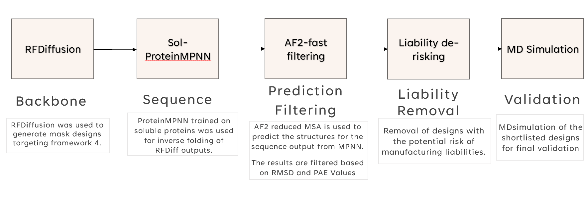
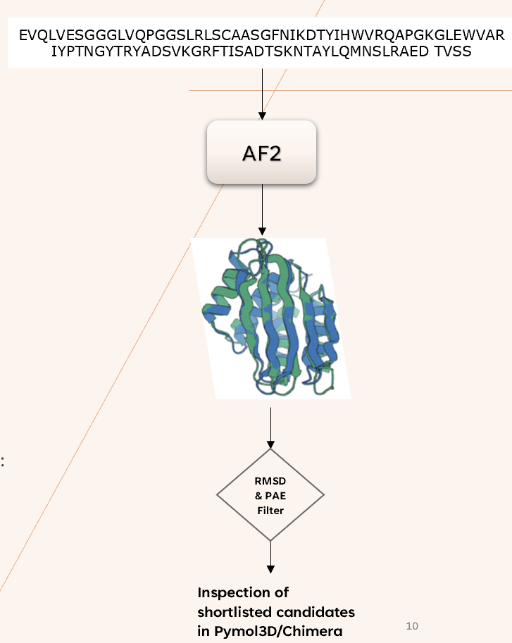
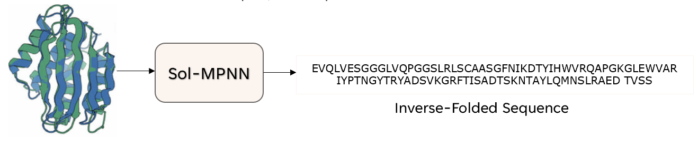

An AI-driven pipeline for designing novel nanobody locks to enhance targeted therapies.
I’ve been working at Hummingbird Bioscience to explore AI-driven solutions for protein design and drug discovery. My main focus is on designing novel nanobody “masks” or “locks” that can selectively activate therapeutic antibodies in tumor environments, thereby improving precision and minimizing off-target effects.
Below are three images illustrating key stages in our pipeline: RFDiffusion & ProteinMPNN, AF2 Prediction & Filtering, and MD Simulation.

RFDiffusion generates the backbone, while Sol-MPNN assigns functional sequences. This ensures high solubility and minimized cysteine usage.

AlphaFold 2 (reduced MSA) validates each design’s structure. We filter out any with RMSD > 5 or PAE > 10 to ensure reliability before further steps.

GROMACS-based MD simulations confirm stability. We track RMSF/RMSD to see how the mask interacts with nanobody CDR loops and finalize the best candidates.
For a deeper dive, including additional slides and data on the entire pipeline: